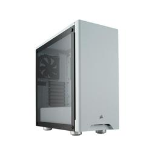

The CORSAIR Carbide Series 275R is a compact mid-tower ATX case that matches minimalist design and a beautiful tempered glass window with a straightforward interior layout and versatile cooling options.

$79.99
Specifications
Manufacturer: Corsair
Type: ATX Mid Tower
Color: White
Power Supply: None
Side Panel Window: Tempered Glass
Power Supply Shroud: Yes
Front Panel USB: USB 3.2 Gen 1 Type-A
Motherboard Form Factor: ATX, Micro ATX, Mini ITX
Full-Height Expansion Slots: 7
Half-Height Expansion Slots: 0
Maximum Video Card Length: 370 mm / 14.567"
Dimensions: 455 mm x 211 mm x 460 mm, 17.913" x 8.307" x 18.11"
Internal 2.5" Bays: 3
Internal 3.5" Bays: 2
Volume: 44.162 L, 1.56 ft³
Features
- Beautiful tempered glass side panel shows off your system in style.
- Clean and minimalist styling with soft accent lighting.
- Builder-friendly with simple and intuitive internal layout.
- Versatile cooling options with space for multiple radiator configurations.
- Rugged-construction steel drive trays provide expansive storage space.
Shopping
Reviews from Customers
I've purchased a lot of gaming cases over the years, both for myself and my customers. This is one of the nicest cases I've ever seen. For only $85 it is fully painted and textured inside and out, so you won't cut yourself and it looks beautiful and clean. I love the separated PSU and drive bays, since it makes cable management easy and gives the case a cleaner and more significant appearance. It comes preinstalled with 2 Corsair fans and all the mounting screws installed for an ATX board (a minor convenience, but a nice little surprise). Plus I like that the card slots on the back have screws instead of toolless clips. Yeah the clips are clever, but how often do you really need to quickly swap your video card? I'm a bit old school and like the security of a screw holding my video card in place, especially when taking it outside to blow the dust out. Overall, I'm very happy with this case. No complaints whatsoever. - User from Amazon
Bottom line is that I really like it. It's a nice white, the whites basically match, I had no defects on the case, it has a built in shroud. Then there's the less than awesome is the tempered glass not having a lip while you try to take off the panel. It ends up being a mini game of twister trying to hold and unscrew without dropping the glass. The major con is the temp between this case and my old one is between 10-15c higher. I'm not too concerned as it's still in a safe territory, but I don't have a heavy duty rig. So just keep in mind the size vs airflow. I have an i5 7th gen with a Corsair cooler, gtx1060-6gb (single fan), and then 5 other fans and still had the temp jump just to give an idea. - User from Amazon
I love this case. It's just big enough for what I need and simple. If you want to go with a build that requires 2 video cards, I suggest buying a larger case. Even though this one can fit 2 of the newer larger GPUs, the bottom one would have the fans nearly touching the bottom which IMO would block cooling and cause some serious issues. If you're going with a single GPU build like I did with this one, this case is perfect. It hides the cables, PSU and HDDs on the other side of the motherboard making it easy to build a nice clean system. I'm a simple guy and I love the simple clean look of this case. - User from Amazon